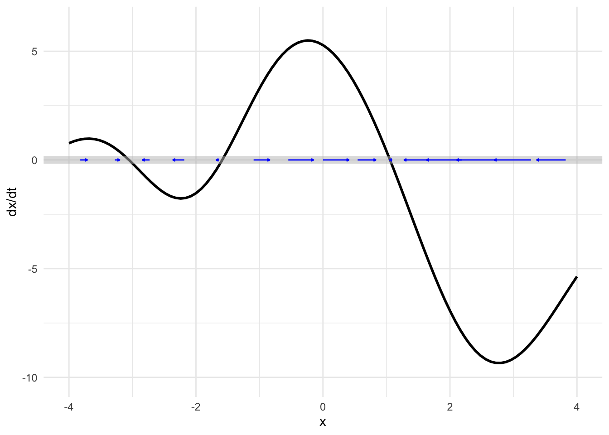
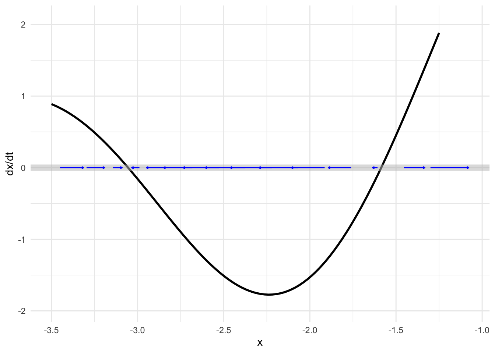
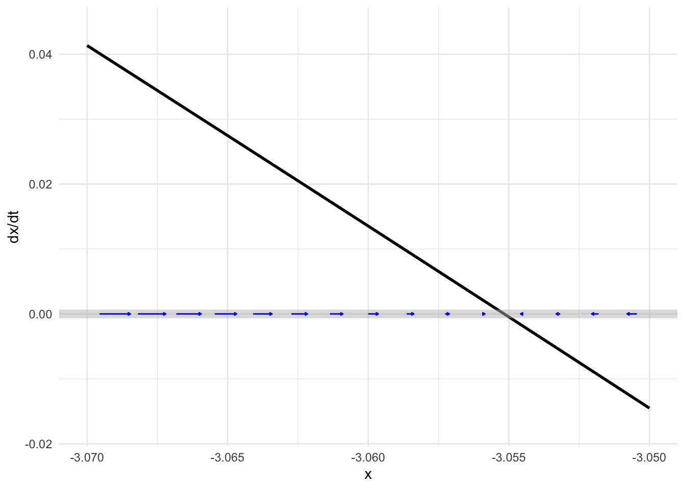
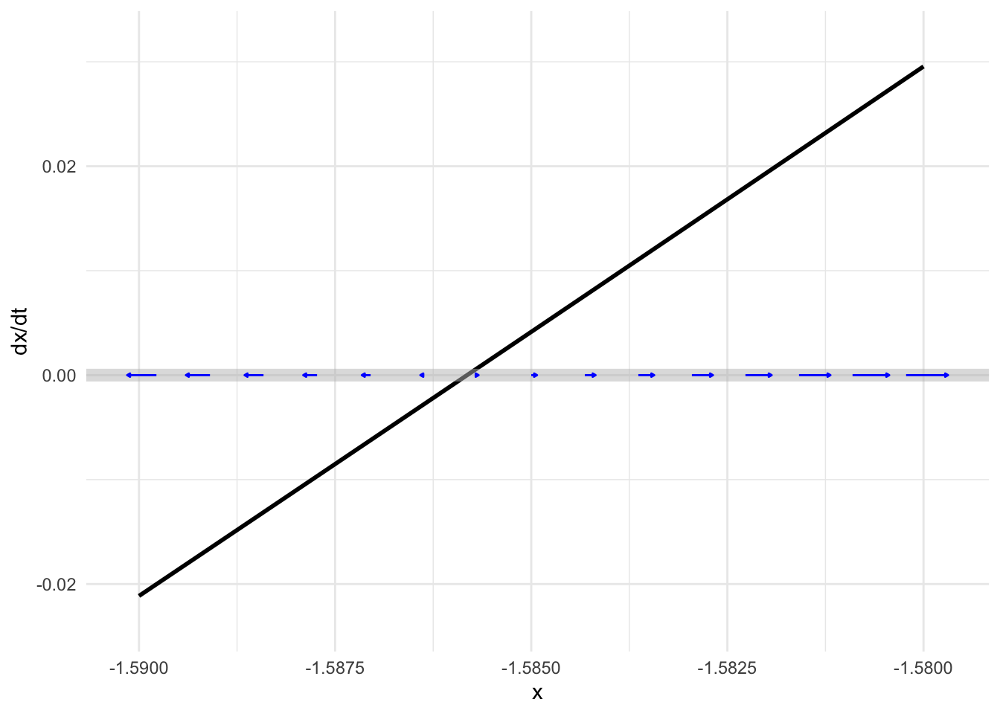
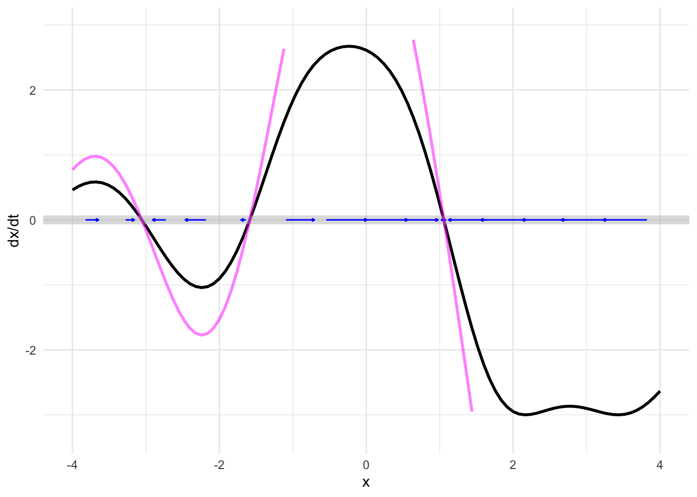
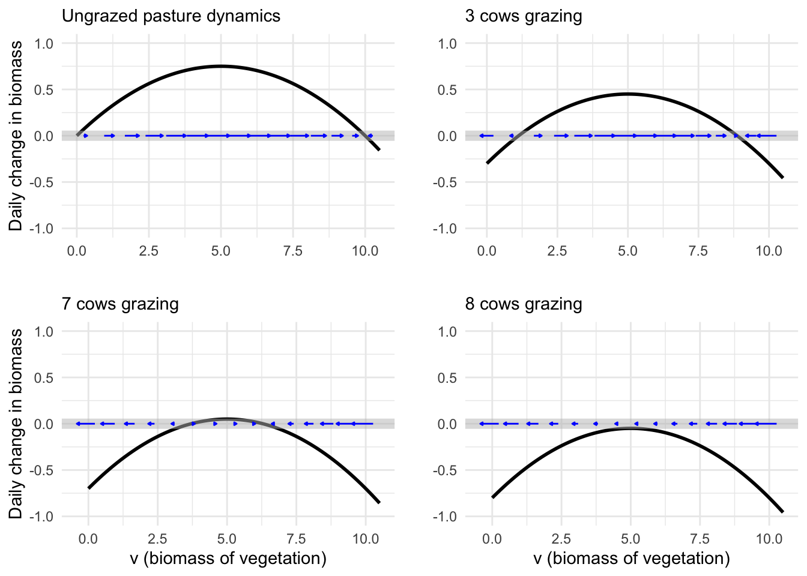

42 Flows on the line
The previous two chapters presented ideas relating to dynamical systems: state, state-space, dynamical function, flow, trajectory, “solution.” Now we turn to the some of the phenomena seen in dynamical systems, starting in the simplest way possible: dynamical systems with a single state variable. We will focus on fixed points and their stability, which can be understood qualitatively (although you need to distinguish between a positive and a negative slope). Then we will look at a technique we have encountered since Block 2: approximation of a function by a straight-line function. Such linear dynamics have a straightforward exponential “solution.”
Finally, we will look at an important example of how careful observation of fixed points and the way dynamics change when we modify a parameter in the dynamical functions provides an understanding of a ecological stability and instability and the consequences that result.
42.1 Dynamical function and flow
In the previous chapter, we saw how to draw a flow field in a two-dimensional state space, evaluating the dynamical functions and using the results to construct a vector. We cannot practically visualize both the flow and the shapes of the two dynamical functions in a single plot, which makes it harder to understand structures such as fixed points.
Happily, with a one-dimensional state space, we can easily show both the flow vectors and the single dynamical function at once.
For ease of reference, we will name the dynamical function for the rest of this section \(f(x)\), so that the differential equation is \[\partial_t x = f(x)\ .\]
The flow itself appears as the example in Figure 46.1. The state space is the number line and the flow vectors are, as usual arrows that point from place to place in the state space.
43 raw <- doodle_fun( ~ x, seed=920)
44 Znotes::phase_line(raw(x) - 2 ~ x, bounds(x=-4:4),
45 nix_dyn=TRUE, narrows=25,
46 transform=function(x) x^.75)

Because the state space can be drawn without using the vertical coordinate of the page, we can use that vertical coordinate to show something else: the dynamical function, as in Figure 46.2.
The correspondence between the dynamical function and the flow field is easy to see in such a presentation. Where the output of the dynamical is large and positive (say, near \(x=0\)), the flow is in the positive direction and relatively fast, as shown by a long, right-pointing flow vector. When the output of the dynamical function is negative (around \(x=3\), for instance) the flow is in the negative direction: a left pointing arrow.
Near a zero crossing of the dynamical function, the flow arrows are negligibly short: the state velocity is very slow. Indeed, at the zero crossings, the state velocity is exactly zero. Such zero crossings are called fixed points: since the state velocity is zero, the state never moves!
We can see the dynamics near fixed points more closely by zooming in, as in Figure 46.3 which shows two of the system’s fixed points.

Notice in Figure 46.3 that the flow is slower the nearer the state is to the fixed point, but it is only exactly zero at the fixed point.
A calculus technique you will be familiar with from previous Blocks is zooming in a region that we want to examine in detail.


The short pieces of the dynamical function shown in Figure 46.4, are, like short pieces of any continuous function: almost exactly straight lines. For the left fixed point, the dynamical function is \(f(x) \approx -2.804 (x + 3.055)\) while for the right it is \(f(x) \approx 5.065 (x + 1.586)\). In Section @ref(symbolic-solutions-ODE) we found symbolically the solutions for dynamical functions in this form. For \(x_0\approx-3.055\) the solution is \[x(t) \approx (x_0 + 3.055)e^{-2.804 t} - 3.055\ ,\] while for \(x_0\approx -1.586\) the solution is \[x(t) \approx (x_0 +1.586)\, e^{5.065 t} - 1.586\ .\] There is something fundamentally different about these two solutions. One of them is exponential decay toward the fixed point, while the other grows exponentially away from the fixed point. We call the dynamics near the fixed-point with exponential decay stable and the dynamics near fixed-point with exponential growth unstable.
Tip
Graphics such as Figure 46.2 let you see both the flow and the dynamical functions together in one place.
How about also showing trajectories? Unfortunately, the two-dimensional extent of a computer screen or a piece of paper make it hard to include still more information in an intelligible way. It would be nice to have a third dimension for the display.
Major Austin Davis developed such a display, using time as the third dimension. In the movie below, the state space is shown as a horizontal line, as before. The vertical axis shows the dynamical function as in Figure 46.2. The dynamical function is shown in another way: as the hue and intensity of color, which lets you focus on the activity in the state space. This activity is shown by the moving gray triangles. Each triangle is placed on the phase line to mark an initial condition, then moves right or left according to the dynamics.
46.1 Generic behavior
So long as two dynamical systems have similar fixed points with the same stability, their trajectories will be much the same. For example, our model dynamical function might be different in detail, as in Figure 46.5, and still produce the same behavior.

So long as two flows have similar fixed points with the same stability, their trajectories will be much the same. Consequently, studying the fixed points without worrying about the details of the dynamics gives a huge amount of information about the system.
For example, Figure 46.6 shows a score of different time series following the solutions from a score of initial conditions. The long-term behaviors for all the time series is similar: they converge to one or another of the stable fixed points.
## Warning: Using `size` aesthetic for lines was deprecated in ggplot2 3.4.0.
## ℹ Please use `linewidth` instead.It is worth pointing out a consequence of the mathematics of continuous functions: if a system with a continuous dynamical function has a region of state space with two different fixed points, there must be an unstable fixed point in between them.
46.2 Linearization
You can see in Figure 46.6 that many of the solutions approach their final, equilibrium value in an exponential manner. This is particularly true for the solutions with initial conditions very near the stable fixed points. All these solutions are characterized quantitatively by the parameter \(a\) in the exponential solution \(A e^{a t}\). (Remember, \(a < 0\) when there is exponential decay.)
Quantitative knowledge of \(a\) is helpful to understand the time scale of the exponential approach to stable fixed points. We can find a numerical value for \(a\) for each fixed point by constructing a linear approximation to the dynamical function near each of the fixed points.
The procedure involves the same principles as introduced in Block 2 for constructing low-order polynomial approximations to functions, but here “low-order” means “first order.”
The analysis is done separately for each of the fixed points, so the first step is to find the fixed points, the values \(x^\star\) such that \(f(x^\star) = 0\).
Recall from Block 2 the Taylor polynomial approximation to a function \(f(x)\) centered on a point \(x^\star\): \[f(x) \approx f(x^\star) + \partial_x f(x^\star) \left[x - x^\star\right]\] When \(x^\star\) is a fixed point, \(f(x^\star) = 0\) so the approximation is simply \(f(x) \approx \partial_x f(x^\star) \left[x - x^\star\right]\). Keep in mind that \(\partial_x f(x^\star)\) is the derivative function \(\partial_x f\) evaluated at the input \(x^\star\), so \(\partial_x f(x^star)\) is simply a quantity, not a function. Indeed, \(\partial_x f(x^star)\) is exactly the quantity \(a\) in the exponential solution \(e^{a t}\).
This process of constructing the linear approximation \(f(x) \approx a \left[x - x^\star\right]\) is called linearization.
Try it! 46.1 Exponential dynamics near fixed points
Consider the first-order differential equation \[\partial_t x = f(x) \equiv r x (x - x/K)\] where \(r\) and \(K\) are parameters that are greater than zero. Linearizing the nonlinear function \(f(x)\) lets us figure out how fast or slow is the exponential growth or decay of the solutions for initial conditions near the fixed points.
There are two fixed points, one at \(x_1^\star = 0\) and the other at \(x_2^\star = K\). What is the exponential parameter \(a\) for each of the fixed points.
The derivative (with respect to \(x\)) \(\partial_x f(x)\) can be found with the product rule from Block 2. It is \[\partial_x f(x) = r\, (1 - x/K) - r\, x\, (1/K)\]
Evaluating \(\partial_x f(x)\) at the two fixed points \(x_1^\star = 0\) and \(x_2^\star = K\) gives
\[\partial_x f(x_1^\star) = r\ \ \ \text{and}\ \ \ \partial_x f(x_2^\star) = -r\] Solutions near \(x_1^\star\) will grow exponentially as \(e^{r t}\), unstable since \(0 < r\). Solutions near \(x_2^\star\) will decay toward \(x_2^\star\) in an exponential manner as \(e^{-r t}\).
Tip
It is critical to distinguish carefully between \(x^\star\), which is the location of the fixed point being examined, and \(x_0\), which is the initial condition of the state, that is, \(x(t=0)\).
Application area 46.1 Retirement savings redux
Let’s return to the model of saving for retirement in Chapter 40: \[\partial_t V = r\, V + M\ .\] The state variable here is named \(V\). The dynamical function is \[g(V) = r\, V + M\] where \(r\) is the interest rate (say, 3% per year which is \(r=0.03\) per year) and \(M\) is the monthly contribution. To keep the units consistent, we set the units of \(t\) to be years, of \(r\) to be 1/years, of \(V\) to be dollars and of \(M\) to be dollars-per-year. So a monthly contribution of \(1000 would come to\)M=12000$ dollars-per-year.
Find the amount \(V\) that will result from 30 years of savings with an initial condition \(V_0 = 0\).
Step i) Find the fixed point. This is a value \(V^\star\) such that \[r\, V^\star + M = 0\ \ \ \implies \ \ \ V^\star = -M/r\ .\] Step ii) Find the derivative of the dynamical function evaluated at the fixed point: Since \(g(V)\) happens to be a straight-line function, we know the derivative is a constant. So \(b = \partial_x g(V^\star) = r\).
Step iii) Translate the state variable into \(y = V - V^\star\). The dynamics in terms of \(y\) are \(\partial_t y = b y\), which has an exponential solution \(y = A e^{bt}\).
Step iv) \(A\) is the initial condition in terms of \(y\). This will be \(y_0 = V_0 - V^\star\). Since we stated that \(V_0 = 0\) (no savings at the start), \(y_0 = -V^\star\) and the solution is \[y(t) = -V^\star e^{bt} = \frac{M}{r} e^{rt}\ .\]
Step v) Translate the solution in step (iv) back into terms of \(V(t)\). Since \(y(t) = V(t) - V^\star\), this will be \(V(t) = y(t) + V^\star\) or, \[V(t) = \frac{M}{r} e^{r t} + V^\star = \frac{M}{r} \left[ e^{r t} - 1\right]\ .\] To get an idea of this retirement plan, that is, \(r=3\%\) and \(M=12000\) dollars-per-year, let’s see how much you will have after 30 years and 40 years.
V <- makeFun((M/r)*(exp(r*t)-1) ~ t, r=0.03, M=12000)
V(30)
## [1] 583841.2
V(40)
## [1] 928046.8After 40 years of contributions, your retirement account will have almost one-million dollars.
You could have accomplished the same calculation using integrateODE(), like this:
Soln <- integrateODE(dV ~ r*V + M, V=0, M=12000, r=0.03,
domain(t=0:40))
## Solution containing functions V(t).
Soln$V(30)
## [1] 583841.2
Soln$V(40)
## [1] 928046.846.3 Bifurcation
A broad, pressing, social concern goes under the name sustainability. Is it sustainable to burn fossil fuels at steady historical levels, let alone at the increasing rate seen since over the last century? Climate scientists answer resoundingly with a no. Is it sustainable to increase food production to the levels needed for developing economies to approach the sort of consumption seen in rich economies?
Dynamical systems are highly relevant to the questions surrounding sustainability. If the economy is near a stable fixed point, then it is sustainable; the trajectory will bring the state of the economy toward the fixed point. On the other hand, if the economy is near an unstable fixed point, we can expect exponential change.
If such exponential changes are not seen, does that mean we are not near an unstable fixed point? One of the terms used to mark the possibility that a stable system can quickly turn unstable is tipping point, defined as
The point at which a series of small changes or incidents becomes significant enough to cause a larger, more important change. Source: New Oxford American Dictionary
The mathematics of tipping points is not at all the same as exponential growth. Certainly, in exponential growth one sees a relatively slow rate of change increase to a large rate of change, a situation described by journalists as “sky-rocketing” or “explosive” or, literally, “exponential.” As you’ve seen, exponential growth is a phenomenon seen in linear dynamical systems; there is no special point at which the dynamics changes.
There is an area of mathematical theory called catastrophe theory. We will use a famous example to show how catastrophes or tipping points are modeled mathematically.
The example comes from a 1977 article in Nature, one of the world’s most prestigious scientific journals. The article, by Robert May, is entitled “Thresholds and breakpoints in ecosystems with a multiplicity of stable states.” The words “thresholds” and “breakpoints” have not been encountered yet in this book, but “multiplicity of stable states” should bring to mind the sort of dynamics seen in Figure 46.2.
The setting for the catastrophe is an otherwise bucolic scene, livestock grazing on a pasture. A pasture is a kind of factory for producing vegetable biomass; the grazing is the consumption of the biomass produced.
As a model for the production of biomass, denoted \(v\) for “vegetation,” we will use \[\partial_t v = r v \left(1 - \frac{v}{K}\right)\] which, as we’ve seen, has an unstable fixed point at \(v_1^\star=0\) and a stable fixed point at \(v_2^\star=K\). Physically, the fixed point \(v_1^\star\) corresponds to a bare field, without any vegetation. It is unstable because any small disturbance in the form of a stray seed landing in the dirt can lead to germination and the rapid growth of vegetation as seeds from the germinated plant spread across the field. Once the field is covered in vegetation, the growth can be exponentially rapid at first but then runs into limited resources: there is only so much sunlight that falls on the field, and the growing vegetation will eventually consume the soil nutrients and water.
This biomass production model corresponds to a sustainable system. Once the biomass level is at \(v_2^\star\) it will stay there.
But biomass production is not the only thing going on in the pasture. The grazing animals—let’s imagine they are cows—are consuming the grass. To start very simply, suppose that each cow consumes amount \(C\) of biomass each day. If there are \(H\) cows, the total consumption is \(H C\) per day. This modifies the dynamics to a slightly new form \[\partial_t v = r \,v(1-\frac{v}{K}) - HC\]. The original, ungrazed dynamics are compared with the grazed dynamics in Figure 46.7.

With grazing, the net growth of biomass is reduced due to the removal of the consumed biomass by the cows’ consumption. For a moderate herd size, there is still a stable fixed point, but it is at a lower level of biomass than would be seen in the ungrazed field. But if the herd size is too large, the ecosystem completely collapses.
This is an example of a tipping point or catastrophe. For moderate herd sizes, there remains a stable fixed point. A farmer might be tempted to add another cow to the pasture, and that is sustainable: there is still a stable fixed point. Indeed, the movement of the stable fixed point might not even be noticed. But add even one cow too many and the fixed point entirely disappears. Still, herd management can fix the problem; take away the cow that tipped the pasture and the fixed point will return.